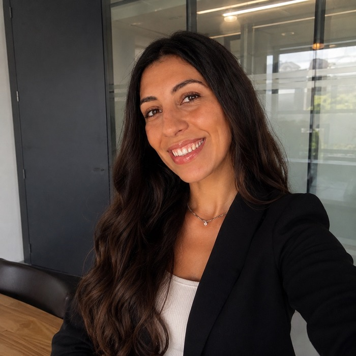

Translational neuro-oncology
Glioblastoma models, tumour plasticity, EGFR-associated phenotypes, treatment response and tumour-microenvironment remodelling.
BIOMEDICAL SCIENCES · TRANSLATIONAL ONCOLOGY · BIOINFORMATICS
I connect cancer biology, multi-omics data and clinical needs. My experience spans glioblastoma research, precision oncology and the coordination of projects with hospital teams and healthcare professionals. PhD research completed; defence pending.
Valencia, Spain · Open to international opportunities

01 / ABOUT
My background combines biotechnology, translational neuro-oncology and scientific project coordination. During my PhD at the Instituto de Salud Carlos III and UNED, I investigated how glioblastoma plasticity influences treatment response and how therapeutic interventions reshape the tumour microenvironment.
My research integrates orthotopic tumour models, patient-derived samples, RNA-seq, single-nucleus RNA-seq and DIA proteomics. Before my PhD, I worked as a Data Scientist at Iakan Health, a precision-oncology startup, where I coordinated project activities, worked directly with hospital teams and healthcare professionals, and analysed clinical and genomic oncology data.
I am interested in roles where scientific evidence, quantitative analysis and cross-functional project delivery can contribute to better therapeutic strategies.
02 / EXPERTISE
Glioblastoma models, tumour plasticity, EGFR-associated phenotypes, treatment response and tumour-microenvironment remodelling.
Bulk RNA-seq, single-nucleus RNA-seq, DIA proteomics, spatial transcriptomics, R, Python and data visualisation.
Orthotopic murine models, stereotaxic procedures, irradiation, tissue processing, IHC/IF, QuPath, Western blot and PCR.
Clinical and genomic data interpretation, hospital collaboration, clinical stakeholder liaison and international project coordination.
03 / RESEARCH FOCUS
Investigating EGFR-associated phenotypes and differential responses to radiotherapy and temozolomide in glioblastoma models.
Studying transcriptional plasticity, including proneural-to-mesenchymal transition, and molecular programmes associated with treatment response.
Integrating paired patient samples, DIA proteomics and murine surgical models to investigate post-surgical changes in the residual tumour niche.
Combining multi-omics analysis and mathematical-model-informed in-silico trial design to support therapeutic optimisation.
04 / EXPERIENCE
2022–2026 · Madrid, Spain
Instituto de Salud Carlos III · UFIEC / UNED
Research on glioblastoma plasticity, radiotherapy and temozolomide response, and post-surgical tumour-microenvironment remodelling. Experimental models, patient-derived samples and multi-omics analysis.
Doctoral thesis: “Glioblastoma plasticity in response to therapeutic intervention: response to standard treatment and post-surgical remodelling of the tumour microenvironment.”
Thesis completed; defence pending.
2021–2022 · Valencia, Spain · International project experience
Iakan Health · Precision-oncology startup
Coordinated scientific project activities and acted as a liaison between hospital teams, clinicians, healthcare professionals and technical colleagues. Supported collaboration with the Hospital Ángeles de Puebla, Mexico, connecting clinical needs with data-driven oncology solutions. Completed a one-month on-site stay in Mexico to support project coordination and local collaboration. Analysed clinical and genomic oncology datasets.
International representation: eMerge Americas Startup Showcase, Miami (2022) and professional activities in Mexico.
2021 · Granada, Spain
GENYO – Pfizer-University of Granada-Junta de Andalucía Centre for Genomics and Oncology
Contributed to a systemic lupus erythematosus research project, supporting immunological assays and flow-cytometry analyses.
05 / PUBLICATIONS
2026 · Biomarker Research
Monago-Sánchez A, Mateos-Madrigal L, Carrión-Navarro J, et al., including Castelló-Pons M.
Read publication ↗2025 · Neurotherapeutics
Castelló-Pons M†, Ramírez-González MÁ†, et al. †Equal contribution.
Read publication ↗2025 · Preprint
Perales-Patón M†, Italia M†, Castelló-Pons M†, et al. †Equal contribution.
Read preprint ↗06 / CONTACT
For research opportunities, collaborations or professional enquiries